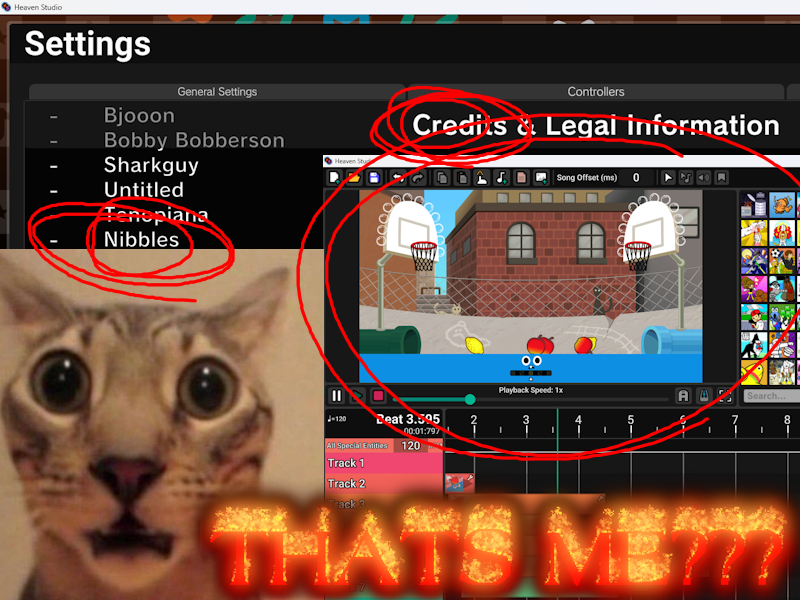
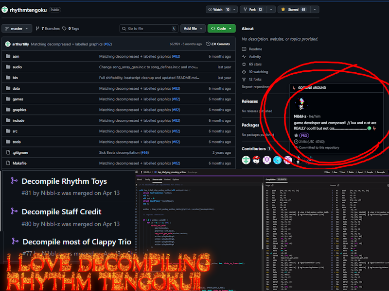
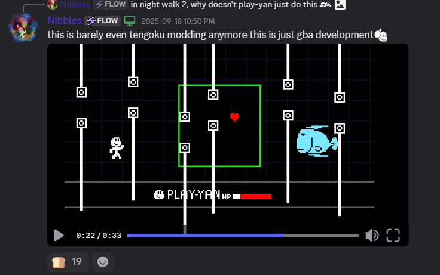

my projects!!
Roblox
Kaboom Kompetition
Kaboom Kompetition is my current flagship project, a competitive destruction/PVP game with rocket launchers and timebombs. Earn points through the destruction and through killing other players; the player with the most points at the end wins! You earn Tokens and XP based on your performance during the rounds, which can be exchanged for weapon skins and emotes, as well as many abilities that can enhance your gameplay. There are 11 different gamemodes, 7 different modifiers, and 7 maps, resulting in a total of 539 different combinations!
Mystery Project...
I CAN'T REVEAL ANYTHING ABOUT THIS ONE QUITE YET BUT IT'S REALLY COOL I PROMISE LIKE IT'S GONNA BE REALLY BIG AND STUFF AND IT LOOKS COOL AND POPULAR PLATINUM STUDIOS SAPPHIRE MEMBER "DEVCMB" IS WORKING ON IT TOO SO THATS HOW YOU KNOW ITS GOOD AND ITS MADE BY THE STUDIO THAT BROUGHT YOU PLATINUM MINIGAMES AND KABOOM KOMPETITION AND CMB MINIGAMES

ON EVERYONE'S SOUL
Non-Roblox Games
Play-Yan Recreation
This is a recreation of the Play-Yan, an obscure media player made for the GBA that is notorious for being difficult to emulate. It contains all features of the Play-Yan, including audio and video playback, minus the bonus minigames and light mode.

Goose Rhythm
Goose Rhythm is a rhythm game with really awesome geese. Specifically the geese from me and my friend's collection of Goose Platformers. It has 5 built-in levels with original music, custom chart support, a fully fledged level editor, settings, and. Bread!
goosing around
Goose Purgatory
GOOSE_PURGATORY is an endless high-score based survival platformer. Collect the BREAD on each floor. Between floors, either ESCAPE your purgatory or CONTINUE. CONTINUING will require you to make a SACRIFICE, either weakening yourself or adding/strengthening different CREATURES. This game was made for Hack Club Daydream, with the theme "Sacrifices must be made".

This game is also very much inspired by Grace Reprieve and Nullscapes.
Biribiriuo Fishing
Biribiriuo fishing is a simple fishing simulator themed around Night Walk from Rhythm Tengoku. The gameplay loop consists of catching fish, selling fish, and buying upgrades to fish better. But it's really cool, because it has Biribiriuo. And other cool fishies. Like the ones from Catch of the Day. And. Wii Play Fishing. Which definitely makes sense.

you know what that means... FISH
Image Playground
Image Playground is a physics sandbox game, where you can insert any image, turning each pixel into a physics object. You can change the gravity, scale images, blow things up, and build walls!

Goose Odyssey
Goose Odyssey is a story/adventure game make for Hack Club's Hackapet. You play as the Goose, who finally wakes up after a nuclear meltdown that occured many years ago. You meet Stella, the only other sane living being left in the city, and learn what has happened to the world. This project was also recognized as acon (creator of hackapet)'s favorite project from the event. That's pretty cool!!! :D

Can't wait for the hackapet to ship!... It's been... Almost a year... Goog
Goose Platformer
Goose Platformer is a platformer game with a level editor. And a goose. That's it. (THERE'S ALSO A BRANCH ON THE GITHUB REPOSITORY WITH ONLINE LEVEL SHARING BUT WE DON'T REALLY TALK ABOUT THAT ONE)

but it's soooo coolll
Goose Platformer Together
Goose Platformer Together is a platformer game that loads levels from Goose Platformer. And allows you to goose around with your friends. Online. That's it.

we will never understand why he didn't add the editor to this version
Goose Platformer Endless
Goose Platformer Endless is a game made in rust in macroquad where you have to traverse a procedurally generated level while escaping an EVIL grey goose.

Goose Survival
GOOSE SURVIVAL is a game where you avoid the grey geese. Collect bread to purchase upgrades at the shop, and survive as long as possible.

This was also my first project made for Hack Club, and my first Love2D game!!!
Goose Roguelike
Goose Roguelike is a game where you have to kill the horde of evil grey geese. Collect their crumbs, buy upgrades at the shop, and annihilate your enemies.

This one is so mid dawg don't even bother ima be fr with u rn. Straight up gooseslop luaslop love2dslop arcadeslop. What are we doing.
"Space Defenders"
You are reaching the bottom of the barrel here. This is a simple clone of Space Invaders, but it's MULTIPLAYER. This was just me testing sock.lua, which I used for Goose Platformer Together. I'm not even gonna bother finding an image for this one.
Sock.luaslop. Multiplayerslop. This friendslop doesn't even have hype moments or aura.
Rhythm Heaven
Heaven Studio (Contributions)
I made Fruit Basket. It's in the Bobby Build now. I started it way before the DMCA, it took like over 3 years :P
Rhythm Tengoku Decompliation (Contributions)
In the main repository, I decompiled the engines for Rhythm Toys and Staff Credit, as well as most of Clappy Trio. I also have WAY too many engine decompliations that are almost finished, usually only missing 1 or 2 functions, or not being documented fully, including: - Drum Live Menu - Marching Orders - Mr Upbeat - Quiz Show - Space Dance - Tap Trial ...as well as some that aren't close to being finished, but I did decompile *some* functions! - Polyrhythm - Tram and Pauline One day I'll PR them. One day.
Decompiling is fun. I should do it again. One day.
Fever Night Walk ported to Tengoku
This was my first Rhythm Tengoku mod, which adds the roll cue from Fever's night walk into Tengoku, and also adds the chart and song from Fever. And also flying biribiriuo instead of huebirds :P

soon we will see we're living the dreams of OUR GENERAATIONNN
Deltarune Battle System ported to Tengoku
This is the stupidest thing I have ever made but I love it. It's not fully finished, I'll do that one day, but in Night Walk 2, you encounter a battle with the Biribiriuo. I've implemented most of the menu functionality, the fighting system, and the actual attacks with hit detection and HP and whatnot, giving Biribiruo 2 different attack patterns. I guess this can also be seen as a port of Deltarune's battle system to the GBA in general, which is also cool.
Maybe if we don't FIGHT, we can get a SUPERB!
Yanimator
Yanimator is an animation editor for Rhythm Tengoku. It is... unfinished... but you *are* able to load animations, play animations, edit animation cells, edit animations, and export them. It's just really janky. Also I don't know what the future of this project should be because someone made a recreation of it in C++ that adds every feature I had planned plus more but it wasn't made open source and the developer left RHModding so like...??? Maybe I'll finish it one day???

nibbles try to finish anything rhythm heaven related challenge (IMPOSSIBLE)
Miscallaneous
Yan
Yan is a simple UI library with many useful elements for Love2D, made to behave similarly to Roblox's UI system. It also has basic instance support, a theming system, and a tweening/animation system. I used this library for all of my Love2D projects past Goose Platformer! There is also a half-baked rewrite of this library that makes it more easy to use and adds documentation, but it's missing most of the features of the main version.

i'm about to rewrite this one for a third time because i want it to be like fusion :P
Biribiri
Biribiri is a Love2D library that adds a bunch of useful miscellaneous tools, including: - Timers - Easy asset loading - math and table functions from Luau

can't find an image for this one, enjoy Biribiriuo.webp
Nibbles' Deep Dark
Nibbles' Deep Dark is my first Minecraft mod, which adds more features to the Deep Dark, including: - Warden Heart: dropped by the Warden upon death, used to upgrade netherite tools to echo tools - Echo Sword/Axe: Does more damage and has a chance to inflict extra knockback and darkness - Echo Bow/Crossbow: Using Sculk Arrows with this weapon fires the Warden's sonic boom attack - Sculk Dust/Arrows: Sculk dust now drops from sculk blocks, which can upgrade arrows into sculk arrows

modrinth paid me a whopping ONE dollar for this mod. business is booming
Cmb Minigames - Sniffer Caretaker
Cmb Minigames is a Minecraft minigames server plugin made by my friend DevCmb. I made the Sniffer Caretaker minigame. It's awesome. I love sniffers!!!
Also there is no actual server to join. I have the rar of the server files with the maps. I'm gatekeeping it :P
Cmb Minigames - Electric Eel
oh yea i made 2 minigames for this server just watch the video its like capture the flag kinda i guess idk
Bmp2Goose
Bmp2Goose converts .bmp images to Goose Platformer levels. This was my first project made in rust, and my first time messing with binary data in files, which definitely helped me out later on when making Yanimator!

most useful project of all time
Mixtaper
Mixtaper,,WAS,, a site to post custom levels for the rhythm game Bits & Bops. The site is dead, and I don't feel like bringing it back because it was really janky. Also the file format for Bits & Bops levels changed. And the game is fully released, and the site only recognizes the first 3 minigames from the demo. Basically, don't use this, there's a reason the site is down. But it was my first proper major web development project!

This project helped me find out how much I despise webdev <3
Yan's Stupid Decks
this is the part where the category gets Crumbly. This is a Balatro mod that adds a bunch of stupid decks. for example, the one in the image multiplies everything by 10. it barely works. Modding Balatro is hard.

balala joker pokerr
Chromapper Draggable Windows
We are reaching ANCIENT nibbles projects here. This is a plugin for ChroMapper that allows you to drag around the windows. I assume my version doesn't work anymore, beacuse someone forked it and updated it. I will link you to said fork.

Chromapper Custom Menu Backgrounds
idk if this even works anymore lmao but it changed the backgrounds on the menu. pretty cool